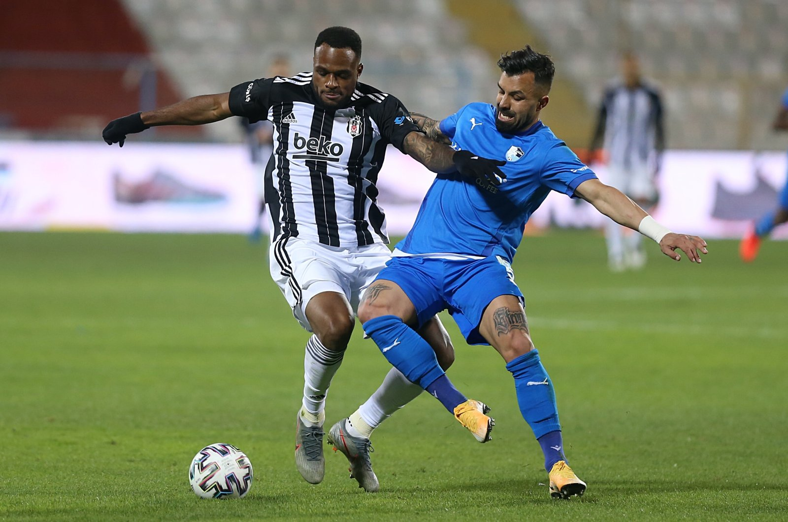

UEFA to sanction 12 football clubs to join breakaway Super League

UEFA and English, Spanish and Italian football authorities opposed the plans of 12 clubs who take part in the breakaway European Super League, as they said the clubs would be banned from all other domestic and continental competitions. European football's governing body said it had learned that some English, Spanish and Italian clubs might announce a breakaway competition. "The clubs concerned will be banned from playing in any other competition at domestic, European or world level, and their players could be denied the opportunity to represent their national teams," UEFA said in a statement. Media reports on Sunday suggested that an announcement on plans to create a Super League could be made later in the day. Sky Sports reported that Liverpool, Manchester United, Arsenal and Chelsea were among six Premier League teams set to be part of the plans. "If this were to happen, we wish to reiterate that we – UEFA, the English FA, RFEF, FIGC, the Premier League, La Liga, Lega Serie A, but also FIFA and all our member associations – will remain united in our efforts to stop this cynical project, a project that is founded on the self-interest of a few clubs at a time when society needs solidarity more than ever," read the statement. Arsenal currently sit ninth in the Premier League, well off the pace in the race to qualify for Europe, while Liverpool and Chelsea are both also currently outside the Champions League spots. "Fans of any club in England and across Europe can currently dream that their team may climb to the top and play against the best," the Premier League said in a statement. "We believe that the concept of a European Super League would destroy this dream." German, French clubs 'refuse' to sign up UEFA is planning to announce its reforms to the Champions League on Monday, with an expansion to 36 teams from 32 and two 'wildcard' slots expected to be among the plans. There have been no reports that French or German clubs would be part of the Super League. "We thank those clubs in other countries, especially the French and German clubs, who have refused to sign up to this," UEFA added. "We call on all lovers of football, supporters and politicians, to join us in fighting against such a project if it were to be announced. "This persistent self-interest of a few has been going on for too long. Enough is enough." The New York Times reported that at least 12 clubs have signed up for the competition, including Juventus and seven-time European champions AC Milan, who have not played in the Champions League since 2014. "It is illegitimate, irresponsible and anti-competitive by design," said Fans Europe, a football supporters' network. "More to the point, it is driven exclusively by greed. the only ones who to stand to gain are hedge funds, oligarchs, and a handful of already wealthy clubs, many of which perform poorly in their own domestic leagues despite their inbuilt advantage." Real Madrid and Barcelona are reported to be two of the teams from Spain set to join. Former Barca president Josep Maria Bartomeu, when he resigned from the role last October, said he had accepted a proposal for the Catalan giants to play in the Super League. "Finally the 'gurus' of the superleague PowerPoint are exiting the darkness of the bar at 5AM, intoxicated with selfishness and a lack of solidarity," said La Liga president Javier Tebas on Sunday. Notably, last season's two Champions League finalists, Bayern Munich and Paris Saint-Germain, are among the big European teams not involved. "Economic interests of a few top clubs in England, Italy and Spain must not result in the abolition of established structures in the whole of European football," German Football League boss Christian Seifert said. "In particular, it would be irresponsible to irreparably damage the national leagues, as the basis of European professional football, in this way." France's Macron stands with UEFA French President Emmanuel Macron said that he supported the position of European soccer's governing body UEFA in opposing the prospect of a breakaway Super League. "The president of the republic welcomes the position of French clubs to refuse to participate to a European football Super League project that threatens the principle of solidarity and sporting merit," the French presidency said in a statement sent to Reuters. "The French state will support all the steps taken by the LFP, FFF, UEFA and FIFA to protect the integrity of federal competitions, whether national or European," the Elysee added, citing the national, European and globally soccer governing bodies.
Beşiktaş extends Süper Lig lead with crucial win
Perhaps playing its worst game of the season since last November, Beşiktaş somehow managed to pass the crucial Erzurumspor barrier with a 4-2 win. But, do not let the score misguide you – Erzurumspor came so close to beating Beşiktaş with the same score several times in the game, but the miracle worker of the Black Eagles, Rachid Ghezzal, saved his team once more. This was probably the only game since November where Beşiktaş relied almost entirely on its individual talents. Before the game the situation already seemed threatening to careful eyes, as the leader of defensive build-ups, Josef de Souza, was out due to suspension, adding to the injured striker Vincent Aboubakar. Souza’s absence was a big factor in Beşiktaş’s bad display, as without him it is hard to increase defensive stability and bring the ball to the midfield. Instead of replacing him directly with Dorukhan Toköz, who is rumored to be leaving the club this summer, manager Sergen Yalçın pulled Atiba Hutchinson back to his original position and put Toköz in front. This affected the team negatively as Hutchinson’s main role is to crowd Beşiktaş’s attack with his runs. Without Hutchinson entering the penalty box, and Toköz waiting out of the penalty box, Cenk Tosun, Cyle Larin and Oğuzhan Özyakup were left alone against a crowded Erzurumspor defense. However, the problems didn’t end there, since both Tosun and Özyakup are completely out of form. Instead of Aboubakar’s dominant physical game, Beşiktaş had to find opportunities and finish them with physically weak Tosun and Özyakup. The former has an excuse as he came out of a long injury and has not played for a long time, but Özyakup has reached the end of his usefulness for Beşiktaş already and needs to depart at the end of the season. Regardless, thanks to some blatant goalkeeping mistakes from both sides, the teams scored two goals in the first half. Then, Erzurumspor started the second half with a deafening bombardment, a trademark craze from one of the most unique managers in the league, Yılmaz Vural. Perhaps the best thing Beşiktaş did as a team in the game was to hold fast against this intense pressure between 45th and 65th minutes. Just at the end of this press, Rachid Ghezzal took the ball in the right wing, dribbled his way past three defenders and placed the ball elegantly inside Erzurumspor’s goal from outside the penalty box. It was complete individual brilliance, against which Erzurumspor players didn’t have an answer. Despite the press, Erzurumspor could not capitalize on its opportunities and Ghezzal immediately punished the side from eastern Turkey. After this momentum-killer, stadium-silencer goal, the game returned to its normal flow. Beşiktaş’s fourth goal late in the game was not a big occasion, apart from the appearance of a reenergizing, mentally-retired, Gökhan Töre. However, despite the bad game it played, Beşiktaş as a team did not yield to pressure or mistakes. Unlike Fenerbahçe and Galatasaray, the team shows a much more solid psychological campaign, in which the manager Sergen Yalçın’s well-known carefree attitude must have played a crucial role. If Beşiktaş can hold on to its lead for two more weeks, its opponents will most likely abandon the title campaign.